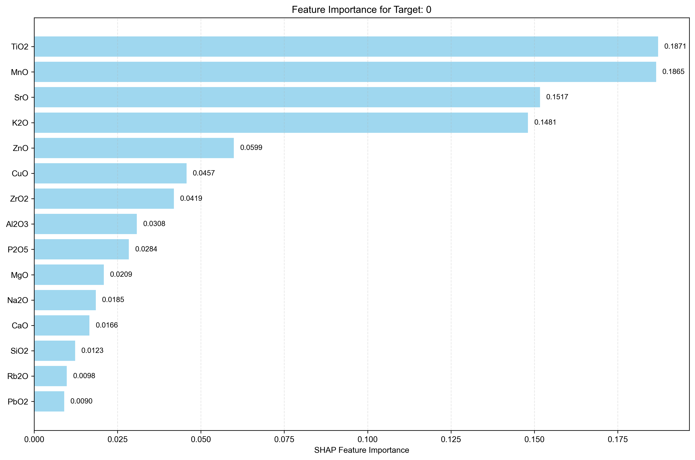
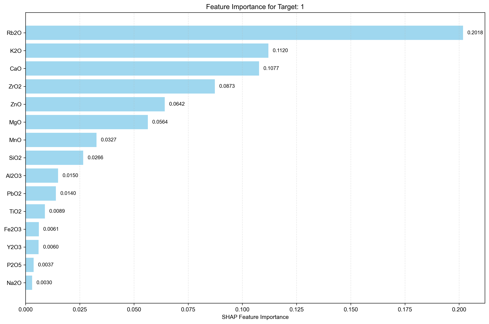
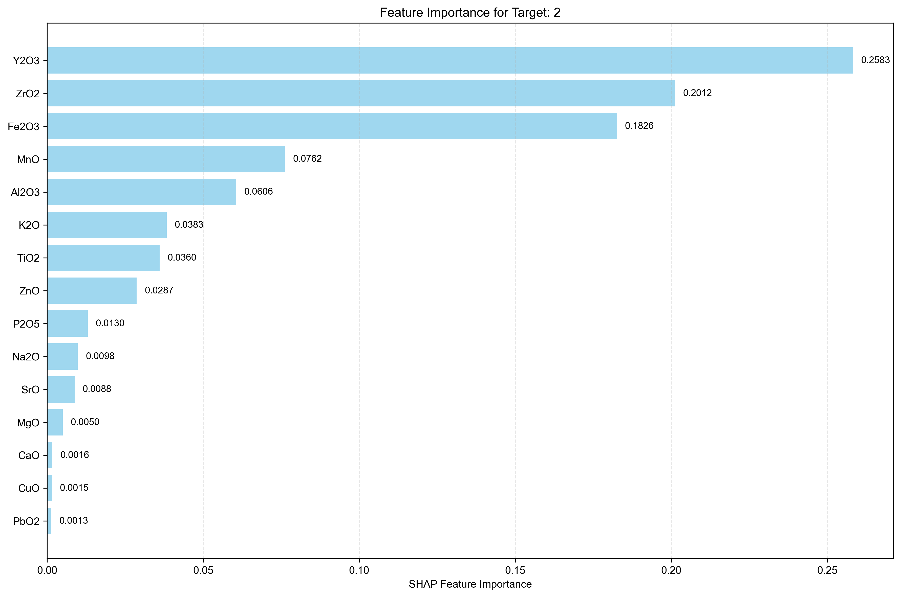
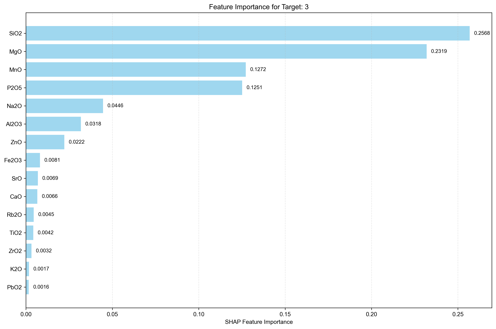
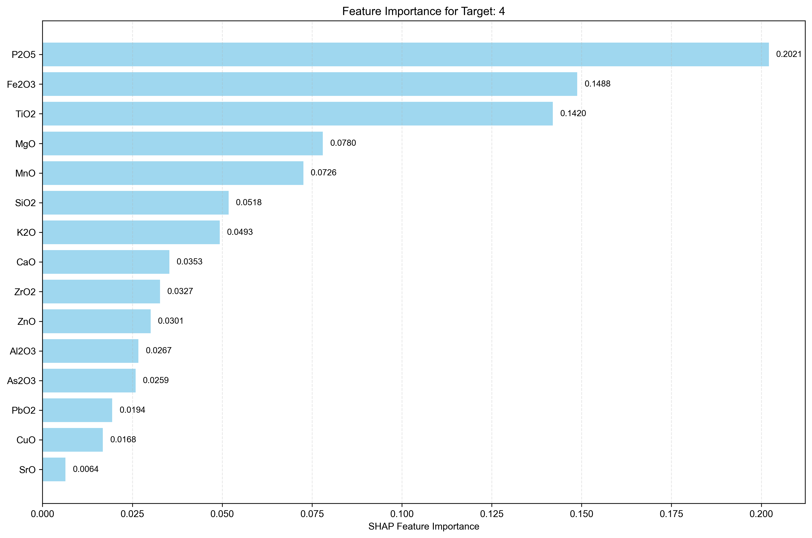

Analysis Method: SHAP
Number of Targets: 5
Generated on:
Targets Analyzed: 0, 1, 2, 3, 4
| Rank | Feature Name | SHAP Importance | Relative Importance (%) |
|---|---|---|---|
| 1 | TiO2 | 0.1871 | 19.15% |
| 2 | MnO | 0.1865 | 19.09% |
| 3 | SrO | 0.1517 | 15.53% |
| 4 | K2O | 0.1481 | 15.16% |
| 5 | ZnO | 0.0599 | 6.13% |
| 6 | CuO | 0.0457 | 4.68% |
| 7 | ZrO2 | 0.0419 | 4.29% |
| 8 | Al2O3 | 0.0308 | 3.15% |
| 9 | P2O5 | 0.0284 | 2.91% |
| 10 | MgO | 0.0209 | 2.14% |
| 11 | Na2O | 0.0185 | 1.89% |
| 12 | CaO | 0.0166 | 1.70% |
| 13 | SiO2 | 0.0123 | 1.26% |
| 14 | Rb2O | 0.0098 | 1.00% |
| 15 | PbO2 | 0.0090 | 0.92% |
| 16 | Fe2O3 | 0.0058 | 0.59% |
| 17 | Y2O3 | 0.0023 | 0.24% |
| 18 | As2O3 | 0.0015 | 0.15% |

| Rank | Feature Name | SHAP Importance | Relative Importance (%) |
|---|---|---|---|
| 1 | Rb2O | 0.2018 | 26.99% |
| 2 | K2O | 0.1120 | 14.98% |
| 3 | CaO | 0.1077 | 14.40% |
| 4 | ZrO2 | 0.0873 | 11.67% |
| 5 | ZnO | 0.0642 | 8.59% |
| 6 | MgO | 0.0564 | 7.54% |
| 7 | MnO | 0.0327 | 4.37% |
| 8 | SiO2 | 0.0266 | 3.56% |
| 9 | Al2O3 | 0.0150 | 2.01% |
| 10 | PbO2 | 0.0140 | 1.87% |
| 11 | TiO2 | 0.0089 | 1.19% |
| 12 | Fe2O3 | 0.0061 | 0.82% |
| 13 | Y2O3 | 0.0060 | 0.80% |
| 14 | P2O5 | 0.0037 | 0.49% |
| 15 | Na2O | 0.0030 | 0.40% |
| 16 | As2O3 | 0.0024 | 0.32% |
| 17 | CuO | 0.0000 | 0.00% |
| 18 | SrO | 0.0000 | 0.00% |

| Rank | Feature Name | SHAP Importance | Relative Importance (%) |
|---|---|---|---|
| 1 | Y2O3 | 0.2583 | 27.94% |
| 2 | ZrO2 | 0.2012 | 21.76% |
| 3 | Fe2O3 | 0.1826 | 19.75% |
| 4 | MnO | 0.0762 | 8.24% |
| 5 | Al2O3 | 0.0606 | 6.55% |
| 6 | K2O | 0.0383 | 4.14% |
| 7 | TiO2 | 0.0360 | 3.89% |
| 8 | ZnO | 0.0287 | 3.10% |
| 9 | P2O5 | 0.0130 | 1.41% |
| 10 | Na2O | 0.0098 | 1.06% |
| 11 | SrO | 0.0088 | 0.95% |
| 12 | MgO | 0.0050 | 0.54% |
| 13 | CaO | 0.0016 | 0.17% |
| 14 | CuO | 0.0015 | 0.16% |
| 15 | PbO2 | 0.0013 | 0.14% |
| 16 | SiO2 | 0.0009 | 0.10% |
| 17 | Rb2O | 0.0007 | 0.08% |
| 18 | As2O3 | 0.0000 | 0.00% |

| Rank | Feature Name | SHAP Importance | Relative Importance (%) |
|---|---|---|---|
| 1 | SiO2 | 0.2568 | 29.25% |
| 2 | MgO | 0.2319 | 26.42% |
| 3 | MnO | 0.1272 | 14.49% |
| 4 | P2O5 | 0.1251 | 14.25% |
| 5 | Na2O | 0.0446 | 5.08% |
| 6 | Al2O3 | 0.0318 | 3.62% |
| 7 | ZnO | 0.0222 | 2.53% |
| 8 | Fe2O3 | 0.0081 | 0.92% |
| 9 | SrO | 0.0069 | 0.79% |
| 10 | CaO | 0.0066 | 0.75% |
| 11 | Rb2O | 0.0045 | 0.51% |
| 12 | TiO2 | 0.0042 | 0.48% |
| 13 | ZrO2 | 0.0032 | 0.36% |
| 14 | K2O | 0.0017 | 0.19% |
| 15 | PbO2 | 0.0016 | 0.18% |
| 16 | CuO | 0.0008 | 0.09% |
| 17 | Y2O3 | 0.0006 | 0.07% |
| 18 | As2O3 | 0.0000 | 0.00% |

| Rank | Feature Name | SHAP Importance | Relative Importance (%) |
|---|---|---|---|
| 1 | P2O5 | 0.2021 | 21.24% |
| 2 | Fe2O3 | 0.1488 | 15.64% |
| 3 | TiO2 | 0.1420 | 14.92% |
| 4 | MgO | 0.0780 | 8.20% |
| 5 | MnO | 0.0726 | 7.63% |
| 6 | SiO2 | 0.0518 | 5.44% |
| 7 | K2O | 0.0493 | 5.18% |
| 8 | CaO | 0.0353 | 3.71% |
| 9 | ZrO2 | 0.0327 | 3.44% |
| 10 | ZnO | 0.0301 | 3.16% |
| 11 | Al2O3 | 0.0267 | 2.81% |
| 12 | As2O3 | 0.0259 | 2.72% |
| 13 | PbO2 | 0.0194 | 2.04% |
| 14 | CuO | 0.0168 | 1.77% |
| 15 | SrO | 0.0064 | 0.67% |
| 16 | Y2O3 | 0.0054 | 0.57% |
| 17 | Na2O | 0.0044 | 0.46% |
| 18 | Rb2O | 0.0039 | 0.41% |

• This report shows feature importance analysis for multi-target regression using SHAP method.
• Higher importance values indicate features that have more influence on the target prediction.
• Rankings are calculated independently for each target.
• Relative importance percentages show each feature's contribution relative to all features for that target.